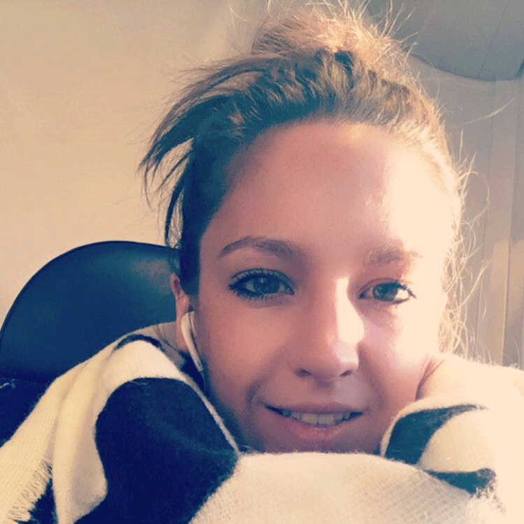

Développeuse Web
27 ans
Permis B
Notions UX Design
HTML5/CSS3
Notions développement web : PHP, SQL
Notions CMS : Worpress, Joomla
Démarche créative : brief, analyse du marché, mindmap, moodbaord, croquis, propositions.
Création d'identité visuelle
Charte graphique
| Alternance |
Juin 2019 Développeuse - Contrat de professionnalisation | 1 an Capgemini, société de conseil, des services informatiques et de la transformation numérique, Montbonnot (38) |
|
2015-2016 UX Designer - Contrat de professionnalisation | 10 mois VIPEO & AXELLIANCE, société d’assurance de biens et de personnes, Lyon (69) Refonte d’un tarificateur pour des courtiers, analyse de l’existant, benchmark, parcours utilisateur, mockups, animer des réunions. Refonte de l’outil gérant les arrêts maladies. |
|
| Stages |
2015 Service Culture et Communication | 3 mois Mairie de Véretz (37) Missions autour de l’évènement de la 7e Fête des Berges : PAO (carte, dépliant, affiches, textiles, badge...) réseau sociaux, la réglementation, démarcher des partenaires, rédaction du compte-rendu de réunion. Mise à jour du site internet de la mairie et de la rubrique « Social », CMS Joomla, rédaction de communiqués de presse, photo. |
|
2009-2012 Vendeuse aux rayons sports de raquettes et sports collectifs | 5 mois Décathlon (37) |
|
|
2010 Vendeuse dans un Charity Shop | 1 mois Save The Children, Orpington, Angleterre |
|
| Jobs étudiants |
2011-2018 Vendeuse polyvalente en boulangerie, Maison Floran, Montbonnot & Saint-Ismier (38)) | 5 mois Vendeuse de fruits & légumes, La Passion du Fruit, Marché de La-Brée-Les-Bains (17) | 6 semaines Vendeuse à Brice, Centre commercial Les Atlantes (37) | 2 semaines Vendeuse à H&M à l’Heure Tranquille (37) | 1 semaine Conseillère de vente aux Galeries Lafayette (37) | 3 mois Vendeuse à Décathlon (37) | 1 semaine |
Titre RNCP Technicien Développeur, Niveau III
Le Campus Numérique in the Alps, Grenoble (38)
Formation sur les différents langages de programmation et des technologies de codage utilisées en entreprise.
Niveau Titre RNCP Concepteur Designer Graphique et Multimédia des Écoles Brassart en alternance, Niveau II
École ARIES, Meylan (38)
Enseignement basé sur une pédagogie de projets afin de maîtriser les processus de direction artistique 360°
DUT Métiers du Multimédia et de l’Internet
IUT François Rabelais de Tours, Antenne Blois (41)
Formation pluridisciplinaire : graphisme, communication, programmation, audiovisuel, gestion de projet. De la conception à la mise en œuvre de stratégies de communication multimédia, en passant par le développement de sites internet ou la gestion de communautés.
1ère année de BTS Management des Unités Commerciales
Lycée Balzac, Tours (37)
Baccalauréat Professionnel Commerce Mention Bien
Lycée Professionnel Victor Laloux, Tours (37)
BEP Vente Action Marchande
Lycée Professionnel Victor Laloux, Tours (37)